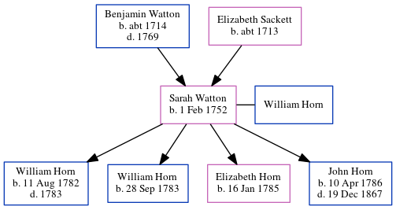

Sarah Horn (née Watton) 1752 -
[ Home ] | [ Calendar ] | [ Surnames Index ] | [ Errors ] | [ Family History ]The child of Benjamin Watton and Elizabeth Sackett, Sarah Watton, the 4 times great-grandmother of Nigel Horne, was born in Margate, Kent, England on 1 Feb 1752, was baptised there on 11 Feb 1752 and also married William Horn (with whom she had 4 children: William, William, Elizabeth and John) there at St John the Baptist's Church on 2 Jul 17811.
Parents
- Benjamin was born c. 1714
- Elizabeth was born c. 1713
Children
- William was born on 11 Aug 1782
- William was born on 28 Sept 1783
- Elizabeth was born on 16 Jan 1785
- John was born on 10 Apr 1786
Citations
- England Marriages 1538-1973 - Findmypast
Media
Canterbury Baptisms Image - GBPRS-CANT-005264866-00385
Canterbury Baptisms Transcription - GBPRS-CANT-B-96741641
Canterbury Marriages Transcription - GBPRS-CANT-M-97111630-2
Family Tree
Map
Generated by ged2site. Last updated on Jul 3, 2024
Known Issues
Birth date (1 Feb 1752) has no citations